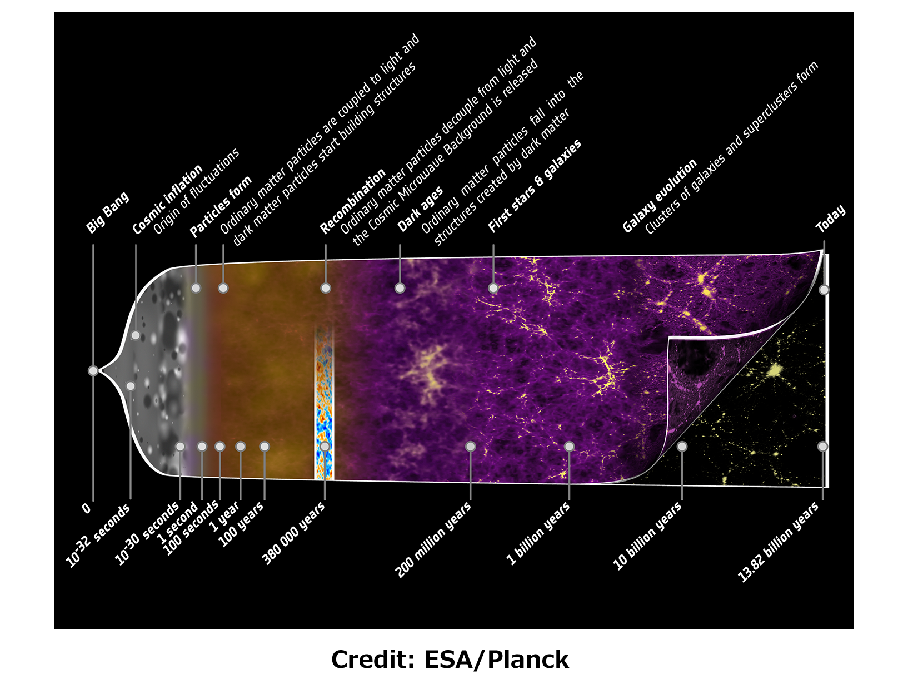
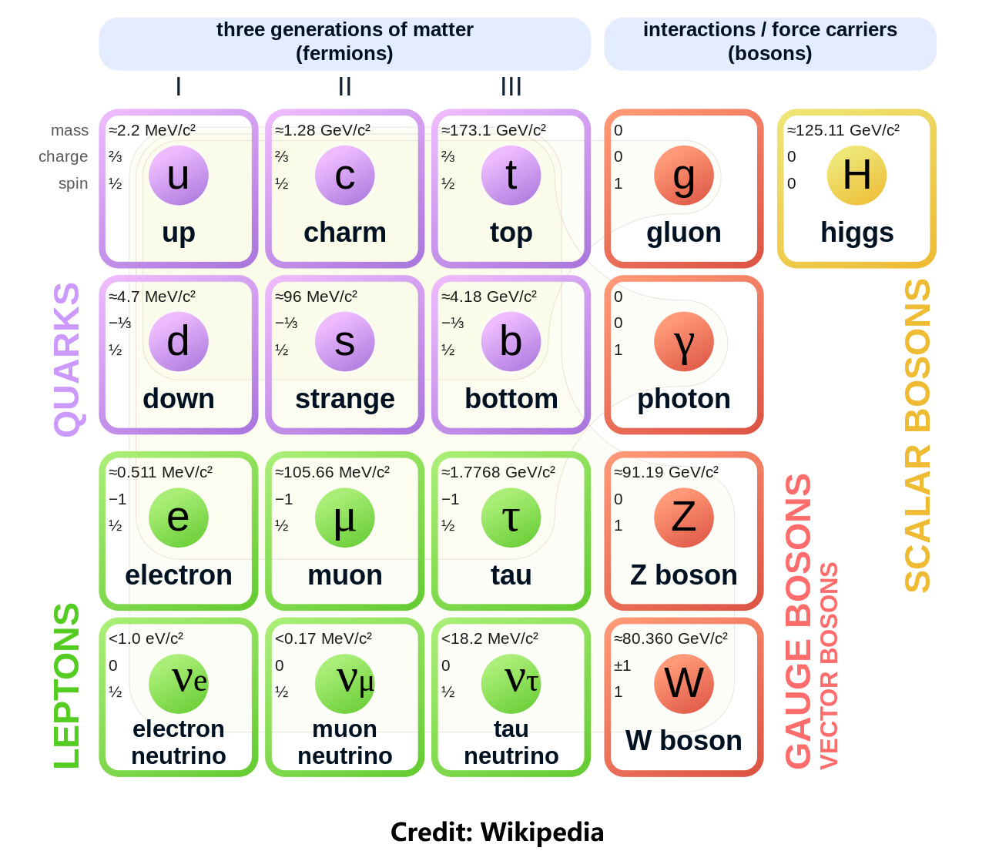

Research
目前我的研究兴趣在粒子宇宙学。既研究最大尺度的物理（宇宙），也研究最小尺度的物理（基本粒子）。而粒子宇宙学就是将粒子物理标准模型和宇宙学标准模型相互交叉的学科，结合实验和观测的结果，研究粒子在宇宙中的相互作用以及宇宙的演化。我会在CARD更新一些相关主题的零碎的知识。
宇宙学标准模型
我们对宇宙演化的理解是基于对引力的理解，而对引力的描述目前最好的理论是爱因斯坦的广义相对论（General relativity）。在宇宙的绝大部分时间里，我们都可以忽略引力的量子效应，因此我们一般能做的是考虑物质在经典引力作用下的演化。目前最流行的宇宙学模型是LCDM模型，这里L是Lambda，指的是常数的暗能量（Dark energy）密度，它目前占宇宙总能量的68%，主导着现在宇宙的加速膨胀。CDM（Cold dark matter）指的是冷暗物质，目前占宇宙总能量的27%，主导着星系团和星系结构的形成。宇宙剩下的5%是构成我们日常所见物质的原子和少量的相对论性粒子。
通过观测，人们能描绘出宇宙大部分时间的演化图景，如图所示。在LCDM模型下，宇宙的年龄大约是140亿年，除了极早期宇宙一个极短暂的暴胀（inflation）阶段（~1032秒）和近期暗能量主导的阶段（~100亿年）是加速膨胀，其它阶段宇宙都是在减速膨胀。尽管LCDM模型+暴胀与大部分观测都能符合得很好，但仍有许多谜团没有被解释，这包括我们观测技术的局限性和理论模型上的难题。特别是早于宇宙再复合（Recombination）阶段的时期（~38万年），越早我们对宇宙的观测能力就越弱，直到大爆炸核合成（Big Bang Nucleosynthesis）阶段（~3分钟）我们都还能得到很多跟观测符合的结果，但更之前的时期，我们能知道的就是宇宙必须相继经历电弱相变和QCD相变，并且已经有暗物质产生，除此之外我们无法得知更多的细节。时间再往前推，我们需要引入暴胀来解释减速膨胀宇宙无法解释的问题，暴胀作为一个唯象模型取得了一定的成功，这可以通过人们对宇宙微波背景辐射（CMB）的观测来验证，这得益于暴胀产生的观测效应直到暴胀结束之后一直被冻结在宇宙视界之外，然后它们重新进入视界，作为光子传播的引力势能的初始条件，在CMB的功率谱上留下印记，在宇宙再复合时期这些光子自由传播然后被我们观测到。其它的重子在大爆炸核合成时期逐步合成更重的粒子，在暗物质的引力下最后坍缩成星系星系团。
- 尽管宇宙学标准模型取得了很大的成功，目前我们仍面临着诸多挑战：
- ✘ 大爆炸核合成之前究竟发生了什么？为什么产生的物质远远多于反物质？
- ✘ 宇宙最初的种子磁场是怎么产生的？
- ✘ 暗物质和暗能量的本质是什么？如何产生的？
- ✘ 中微子的质量是多少？是否与其它粒子相互作用？
- ✘ 探测原初引力波？原初黑洞？暴胀的微观物理具体是什么？
- ✘ 暴胀之前的宇宙是什么样子的？量子引力？
- ✘ …………
粒子物理标准模型
粒子物理标准模型（Standard Model）是基于量子场论（Quantum field theory）框架搭建起来的模型，用于描述我们世界除引力以外的"大多数"物质的相互作用。"大多数"指的是我们日常所见的大多数物质，即费米子（Fermions），包括三代夸克（Quacks）和三代轻子（Leptons），这些费米子之间的相互作用通过玻色子（Bosons）传递，而这些相互作用包括强力（胶子），弱力（W和Z玻色子）和电磁力（光子）。除此之外，标准模型还包含一个标量粒子——希格斯玻色子（Higgs），与费米子和玻色子都有相互作用。 夸克和轻子根据性质分别都被分成六种，对称性决定了它们的相互作用的形式，这些相互作用包括强力，电磁力和弱力，作用强度依次递减。由于引力在次原子这个能标上比最小的弱力还小几十个量级，所以可以完全忽略。我们可以用SU(3)×SU(2)×U(1)对称群来描述标准模型。其中SU(3)用来描述夸克之间的强力，在这个规范变换下相互转换的三个态被标记为三种色（color）。而SU(2)×U(1)则用来描述电弱力，轻子被分为两组，电子，muon子和tau子以及它们对应的中微子，而夸克也可以根据色分为两组，这些两组粒子之间的弱力相互作用由SU(2)描述，但这个对称群只作用在左手（Left-hand）费米子上，右手（Right-hand）费米子在SU(2)下是单重态。所以左手费米子和右手费米子有着轻微的差别，即电荷和宇称（CP）破缺。这使得费米子不能拥有质量，但我们知道现实中的费米子，比如电子都是有质量的，所以我们需要引入一个SU(2)变换下的双重态，即希格斯标量粒子。当它的真空结构发生自发对称性破缺（spontaneous symmetry breaking）的时候，希格斯场通过汤川耦合（Yukawa coupling）赋予费米子非零的质量，这个质量的大小取决于希格斯粒子的真空期望值和汤川耦合的大小，比如tau子和电子的汤川耦合相差105倍，所以它们的质量也相差这么多数量级。同时它也告诉我们标准模型的CP破缺程度有多大。另一方面，我们在现实里没有观测到任何右手中微子的存在，所以无法通过汤川耦合赋予中微子质量，所以在这个描述里三种中微子都是无质量的。自发对称性破缺同样会赋予W和Z玻色子质量，在电弱力里，非零的希格斯真空使电弱对称性自发破缺后，SU(2)的一部分和U(1)共同构成一个新的U(1)EM，即我们熟知的电磁力。 标准模型作为一个唯象模型，在精度上和预言能力上都取得了巨大的成功，但同时存在许多无法解释和处理的事情。例如，通过对太阳中微子的观测，人们发现中微子振荡，这说明中微子是有质量的，但标准模型无法给出合理的解释。此外，要使得标准模型在量子层面上没有反常，我们需要考虑一个来自于规范场的拓扑贡献，这个贡献会极大地破坏CP对称，但人们发现这个CP破缺角非常小或者没有，这标准模型也没法给出解释。而构成我们宇宙大部分物质的暗物质，也不属于现有标准模型中的任何一种粒子。另一方面，由于夸克是渐近自由的，强力会随着距离增加反而增强，这使得在在低能标时强耦合大小会非常强，这时候量子场论作为一个微扰理论，无法处理这种非微扰的情况。种种问题都表明标准模型作为一个低能有效理论，它没法描述我们世界的全部，超越标准模型（BSM）的物理仍是目前一个被广泛讨论的课题。
- 标准模型仍为我们留下很多谜团：
- ✘ 为什么希格斯粒子的质量比普朗克质量低那么多（Gauge hierarchy）？
- ✘ 为什么有些费米子之间的质量会相差这么大（Mass hierarchy）？是什么决定了汤川耦合的大小？
- ✘ 为什么夸克和轻子都是三代？有没有可能不止三代？
- ✘ 为什么左手费米子和右手费米子的相互作用形式如此不一样？
- ✘ 中微子的质量起源是什么？存不存在右手中微子？
- ✘ 为什么强CP角会这么小？轴子（axion）？
- ✘ 为什么是SU(3)×SU(2)×U(1)？电弱力和强力在更高的能标上是否统一？
- ✘ 引力在高能标怎么被纳入标准模型？量子引力？
- ✘ …………
About my research
我学生时代的研究方向。
极早期宇宙（The very early universe）
博士阶段我的研究集中在是暴胀（inflation），早期宇宙的电磁场和轴子（axion）等相关前沿领域。主要是在极早期宇宙时期中考虑电磁场的产生，演化和与其它物质的相互作用。同时也研究暗物质（dark matter），特别是类轴子暗物质对宇宙大尺度结构形成的影响。在此期间也编写了用于计算宇宙微波背景辐射（CMB）功率谱的Boltzmann代码 ▶ CMBSnail，用于计算带有多个轴子的LCDM模型下的功率谱。
博士论文：Gauge fields production during inflation 导师：早田 次郎
规范/引力对偶（Gauge/Gravity duality）
硕士阶段我的研究集中在规范/引力对偶。得益于全息（holography）原理和Ryu-Takayanagi公式，我们可以将量子多体系统和引力系统对偶起来。我通过研究凝聚态物理中的张量网络（tensor network）方法，试图理解纠缠熵（entanglement entropy）和复杂度（complexity）在引力那边的对偶。但这个方向我只是浅尝辄止，目前已经没有在做相关的研究。
硕士论文：Kinematic空间中的全息性质及其张量网络表述 导师：舒 富文
其它
目前正在积极了解学习更多的方向，扩展自己的研究兴趣，但仍集中在宇宙学/天体物理/粒子物理等领域...